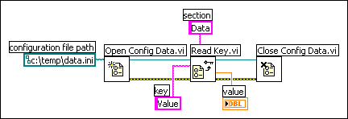

Use the Configuration File VIs to read and create Windows configuration settings (.ini) files and to write platform-specific data, such as paths, in a platform-independent format so that you can use the files these VIs generate across multiple platforms. The Configuration File VIs use the configuration settings file format. While you can use the Configuration File VIs on any platform to read and write files created by the VIs, you cannot use the Configuration File VIs to create or modify configuration files in an macOS or Linux format.
|
Note��You can use the Configuration File VIs for Windows configuration settings files only in the ANSI format. |
Refer to the labview\examples\File IO\Configuration (INI)\Configuration (INI) File.lvproj for examples of using the Configuration File VIs.
 Open example�
Open example�
 Find related examples
Find related examples
|
Note��The standard extension for Windows configuration settings files is .ini, but the Configuration File VIs work with files with any extension, provided the content is in the correct format. |
A standard Windows configuration settings file is a specific format for storing data in a text file. You can programmatically access data within the .ini file easily because it follows a specific format.
For example, consider a configuration settings file with the following contents:
[Data]
Value=7.2
You can use the Configuration File VIs to read this data, as shown in the following block diagram. This VI uses the Read Key VI to read the key named Value from the section called Data. This VI works regardless of how the file changes, provided the file remains in the Windows configuration settings file format.
